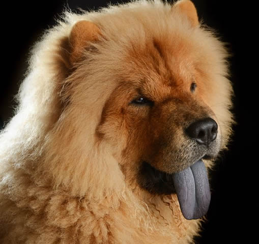

GUIA DE RAÇAS DE CÃES
Chow Chow
Apesar de não ser o típico cão de guarda ou mesmo familiar, o Chow Chow é mesmo assim uma raça bastante apreciada por ser bastante bonita e, concomitantemente, por ter um bom temperamento com donos que sabem como cuidar adequadamente deles.
A origem exata do Chow Chow é desconhecida, porém, alguns especialistas defendem que esta é uma das raças de cães mais antigas, o que foi inclusive comprovado por testes genéticos, entretanto já realizados.
Julga-se que as origens desta raça remontam à Mongólia e norte da China, movendo-se mais tarde para sul com as tribos nômades.
No passado, estes cães foram usados como cães de trabalho pelos chineses, na realização de várias tarefas, como na caça, no pastoreio, na proteção da casa, entre outras. Contudo, o seu papel ia muito além de um simples cão de trabalho para os chineses, uma vez que o seu pelo foi também muitas vezes usado para fazer casacos para os humanos.
Além disso (infelizmente), serviam e ainda servem de alimento nesse país, onde são considerados uma iguaria.
Por volta de 1800, o Chow Chow foi levado para Inglaterra por mercadores. Curiosamente, julga-se que o termo “Chow Chow” foi resultado de um termo geral que designava todos os bens que eram provenientes do oriente.
| Ficha da raça | ||
|---|---|---|
| Nome original | sōng shī quǎn (cão-leão-empolado) |  |
| Origem | China | |
| Grupo | 5 - Spitz e cães do tipo primitivo. | |
| Expectativa de vida | 9 a 10 ano | |
| Comportamento | Calmo, bom guardião, independente, leal e reservado | |
| Altura | Machos: 48 a 56cm | |
| Fêmeas: 46 a 51cm | ||
| Peso | 20 a 30 Kg | |
| Padrão | Padrão internacional em português (CBKC-FCI) | |
| Versão americana em inglês (AKC) | ||